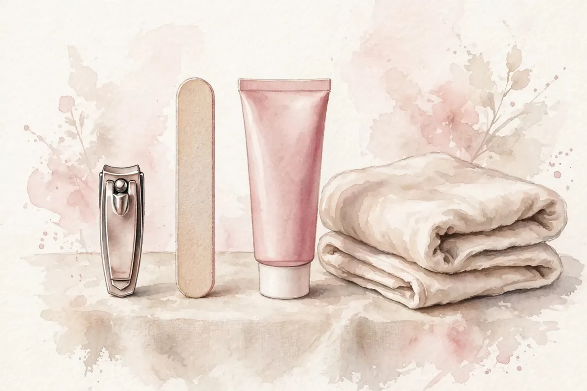
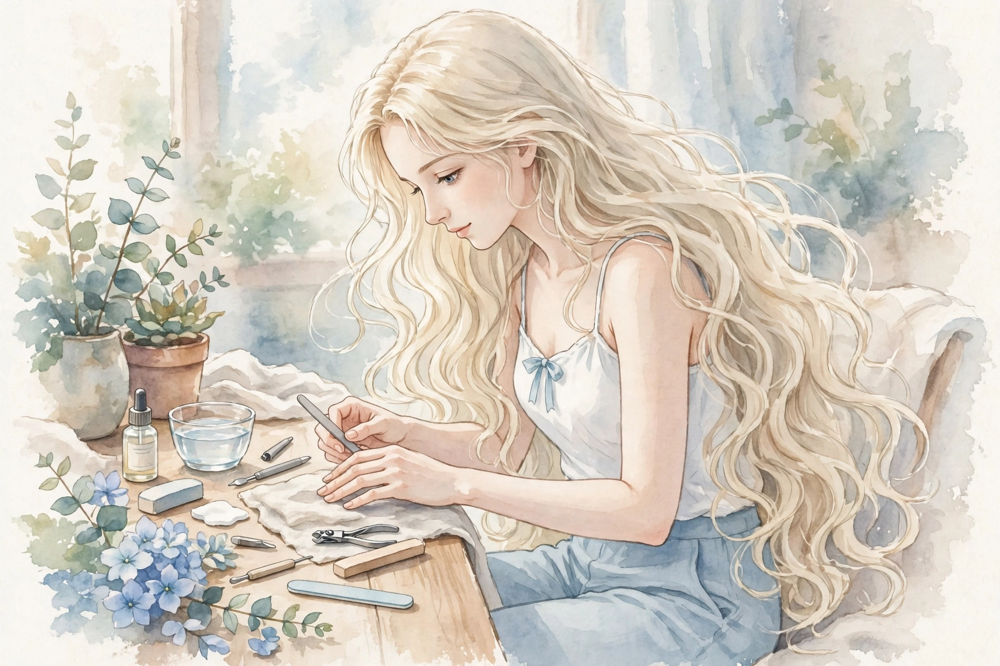

爪まわり・指先のケアの組み立て

施術では、お客様の手や指先に触れる機会が多くあります。爪まわりは小さい部位ですが、乾燥しやすく、ささくれが気になる方も多い場所です。手は一日に何度も目に入る部位でもあり、指先の状態は、その人の印象にも関わります。この記事では、爪まわり・指先のケアを、日常の流れの中にどう組み立てるかを整理します。特別な道具をそろえる話ではなく、手持ちのアイテムと手順の話です。
タイミングは「入浴後」に置く
爪まわりは、水仕事や入浴のあとでやわらかくなっているときに触ると、力を入れずに整えやすくなります。私は、入浴後の手が温かいうちに、指先までクリームを伸ばす流れを基本にしています。爪の根元まわりは、指の腹で小さく円を描くように、やさしくなじませます。手の甲から指先へ、という順番を決めておくと、塗り残しが減ります。
爪切りを使う日は、入浴後の爪がやわらかいうちが切りやすいタイミングです。一度に深く切らず、少しずつ形を整える方が、切りすぎを防げます。やすりを使う場合は、一方向に動かすのが基本の動かし方として案内されることが多いです。往復させると爪の先が荒れやすいので、方向をそろえることを意識します。切る長さは、指先の形に沿って少しずつ調整し、白い部分を残しすぎない・切りすぎない中間を目安にします。
頻度も決めておくと、段取りが安定します。週に一度、決まった曜日に爪を整える日を作る、といった形です。頻度が決まれば、道具を出す場所と時間も固定されてきます。
道具は「清潔に保つ」ことが先
爪切りややすりは、使ったあとに汚れを落として乾かし、乾いた場所に保管します。家族と共有しているご家庭もありますが、施術の現場では道具は個人ごとに分けるのが原則です。自宅でも、できれば自分の道具を決めておくと、手入れの習慣がつきやすくなります。道具ケースに名前を書くなど、見分けの方法をひとつ決めておくことも有効です。
道具の切れ味が落ちてきたら、無理に力で切ろうとせず、買い替えを検討します。切れ味の悪い道具は、爪に負担をかける切り方になりやすいからです。保管は、湿気の多い洗面台の棚より、乾いた引き出しの方が道具には向いています。使ったあとにアルコールを含ませた綿で拭くなど、簡単な手入れを手順に入れている方もいます。
甘皮まわりは「押さない・引っ張らない」
爪の根元の甘皮まわりは、無理に押したり、ささくれを引っ張ったりしないことが大切です。気になる部分は、清潔な爪切りや小さなはさみで、引っ張らずに根元から切るようにします。出血したり、赤みや痛みが続いたりする場合は、自己流のケアを続けず、医療機関にご相談ください。
指先のケアは、顔や全身のケアの「ついで」に組み込むと続きます。ハンドクリームを塗るときに、最後に指先と爪まわりまで伸ばす、という一手間を決めておくだけで十分です。部位が小さいからこそ、手順を固定しておくことが、無理なく続けるコツになります。水仕事の多い方は、水仕事のあとを塗るタイミングに決めておくと、回数が自然に増えます。
この記事は日常の手入れの段取りの紹介です。爪や指先に痛み・腫れ・色の変化がある場合は、医療機関にご相談ください。
もうひとつ、現場で感じるのは、指先のケアは「道具の置き場所」で続くかどうかが決まる、ということです。爪切りとやすりを、使う場所の近くにケースごと置いておく。クリームは洗面所と寝室など、塗る場面の場所に分けて置く。置き場所が決まれば、段取りは自然に回り始めます。逆に、道具を探す手間があると、それだけで先延ばしになります。指先は小さい部位ですが、段取りの設計は全身のケアと同じです。

セラフィナ「指先は小さい場所だけど、毎日よく目に入る場所。ついでの一手間がちょうどいいね」